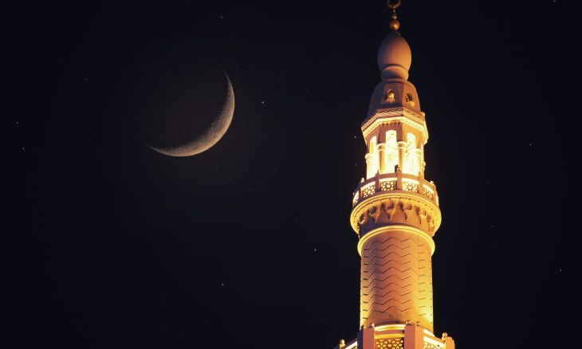

الصوم
والمسلم يصوم عن الطعام والشراب ويمتنع عن اللغو والنميمة والمعاشرة الزوجية وكل عمل سيء من طلوع الفجر (أي: من أول وقت صلاة الفجر) إلى غروب الشمس (أول وقت صلاة المغرب). ويقضي طوال يومه في عبادة وذكر وتلاوة للقرآن ودروس علم تعطيه زاداً إيمانياً يكفيه بقية العام.
ويسقط هذا الفرض عمن لا يقوى على صومه كمرض ألمّ به يُلزمه بتناول الدّواء أو كمريض قرحة المعدة الذي لا يقوى على المعدة الفارغة من الأكل والشرب.
